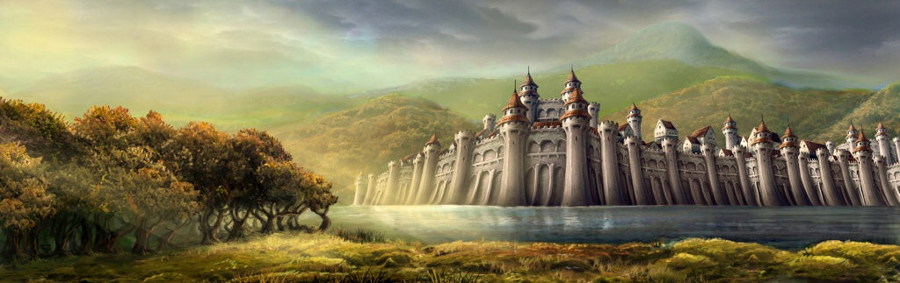
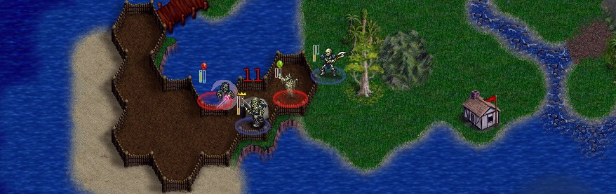

- 
Legends of Wesnoth (LoW) is based on Trueskill - the Bayesian ranking method which lets you approach your "true skill" with just a few games. Furthermore, LoW showcases the scalability aspects of Trueskill and becomes the first system to introduce a separate 2 v 2 ladder! So go ahead and report your Loris River victories!
-

Great new features of this ladder are - A dedicated page for every game, faction and map related stats, a user interface which is easy to navigate, improved player profiles with a complete list of wesnoth characters as avatars, and a great new color coding scheme according to player ratings!

New and upcoming features - Player-to-player comparisons, exhaustive game search, parallel ladders for different game types like Survivals and a nice interface to host and follow tournaments!